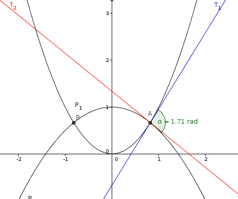

| Choisissez votre langue ! | Choose your language ! |
Trouver l'angle entre les paraboles y=x² et y=1-x²/2
aide
Déterminer d'abord les coordonnées des points d'intersection.
Calculer les équations des tangentes en ces points.
solution
Le problème est symétrique par rapport à l'axe y'Oy.
Il y a donc deux points d'intersection A et B symétriques par rapport à cet axe.
On trouve le point d'intersection A(√(2:3),2/3).
La tangente en A à la première parabole a pour équation √(2/3)x-(1/2)y-1/3=0.
La tangente en A à la seconde parabole a pour équation √(2/3)x+y-4/3=0.
Un vecteur unitaire de la première tangente est (0.52223, 0.8528).
Un vecteur unitaire de la seconde tangente est (0.7746, -0.63246).
Le produit scalaire des deux vecteurs unitaires est -0.13484.
L'angle est arcos(-0.13484)=1.706 radians.

Find the angle between parabolas y=x² and y=1-x²/2
hint
First determine the coordinates of the points of intersection.
Calculate the equations of the tangents at these points.
solution
The problem is symmetric with respect to the y'Oy axis.
There are therefore two intersection points A and B symmetrical with respect to this axis.
We find the point of intersection A(√(2:3),2/3).
The tangent at A to the first parabola has the equation √(2/3)x-(1/2)y-1/3=0.
The tangent at A to the second parabola has the equation √(2/3)x+y-4/3=0.
A unit vector of the first tangent is (0.52223, 0.8528).
A unit vector of the second tangent is (0.7746, -0.63246).
The dot product of the two unit vectors is -0.13484.
The angle is acos(-0.13484)=1.706 radians.
|
Création Gilles Dubois - licence CC-BY-SA
Created by Gilles Dubois - licence CC-BY-SA
|
Septembre 2023
September 2023
|
Version mobile Jquery
Mobile Jquery version
|
|